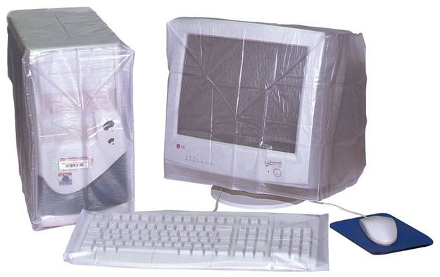
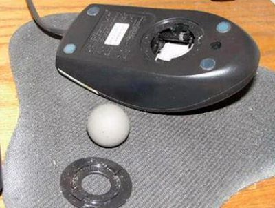
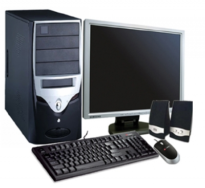
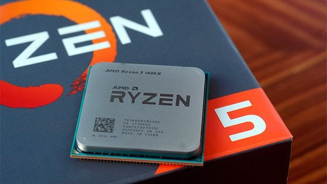
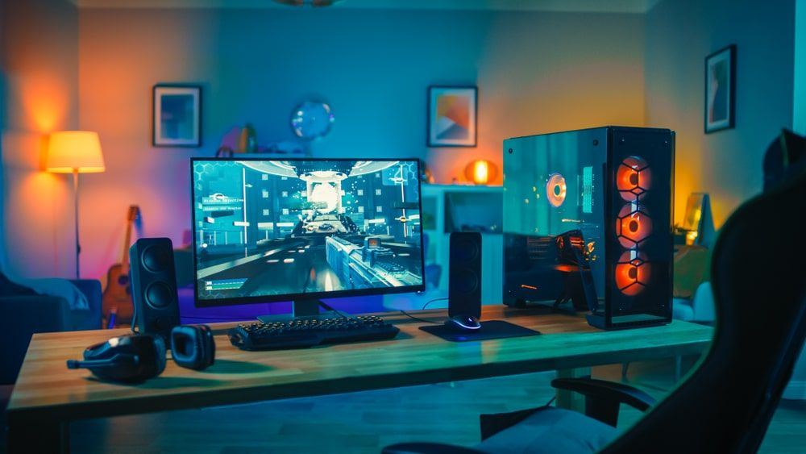
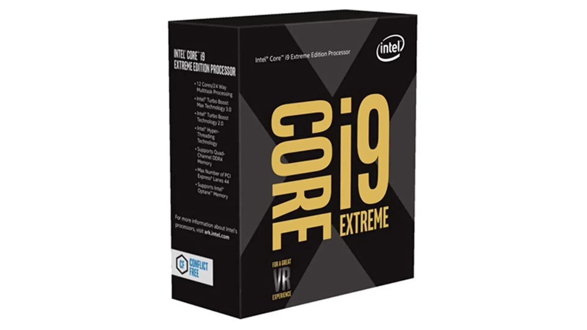
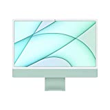
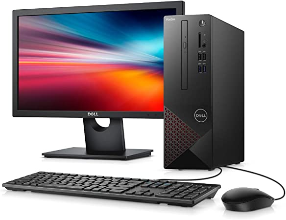

Década de 2000
Na década de 2000 os computadores eram brancos, com o passar do tempo essas cores passavam a ficar amareladas, sendo assim para evitar o desgaste era comum utilizar capas protetoras para evitar que perdessem a cor ou ficassem desagradáveis visualmente, possuíam suporte para leitura e gravação disquete, onde tinha capacidade de até 1.44mb e era muito eficiente para transferências de documentos, desde que fossem de capacidade pequena.
Figura 16 - computador época 2000
Fonte: guiadopc.com
A maioria dos computadores entre 2000 e 2008 possuíam entradas para CDs e DVDs, devido a suportar uma capacidade maior de armazenamento. Os mouses desses computadores eram os famosos “Mouses de bolinha”, continha uma bola na parte de baixo que rastreavam os movimentos, funcionava perfeitamente, porém quando sujo era muito difícil de realizar movimentos.
Figura 17: Mouse década de 2000
Fonte: imagens google
Entre os anos 2000 e 2009, as velocidades de processamento aumentaram em relação a década de 90, ficando em torno de 2,8 GHz. Importante destacar que o número de transistores por chip aumentou de 37,5 milhões por chip em 2000 para 904 milhões em 2009.
Nessa época a AMD e Intel eram as principais empresas no mercado de CPUs, em 2005 a AMD lançou o Athlon 64 x2, no qual conquistou uma grande parte do mercado de CPUs.
Nessa década uma grande parte da população já tinha acesso a esses computadores, eles estavam presentes nos lares, escolas e nos ambientes de trabalhos, já possuíam acesso à internet. O que faltava era investir no designer, deixar esses computadores bonitos, menores e com isso foi a era dos notebooks, eles ficaram mais populares, pela a facilidade de manuseio e ser menor em comparação a um desktop.
Na década de 2000 houve muitos avanços tecnológicos, como por exemplo em 2007 ocorreu o lançamento da primeira TV LCD onde superou em vendas as TVs de tubo, ocorreu também a chegada dos famosos pendrives, onde o que chamava atenção era a possibilidade de apagar o conteúdo armazenado para ser reutilizado.
Importante lembrar do smartphone da época lançado pela Research In Motion (RIM), o BlackBerry 5810 trouxe uma grande inovação, onde era possível agendar, fazer anotações, realizar ligações e ouvir música, tudo em um só aparelho, outro avanço importante foi a chegada a internet banda larga, possibilitando um download mais rápido e velocidade nas navegações.
Década de 2010
Os computadores da época de 2010, não eram diferentes de hoje, possuem as mesmas características e designers dos dias de hoje.
Figura 18 - computador 2010
Fonte: Newsrondonia.com.br
O melhor processador da época era o Ryzen 5 AMD, de acordo com pesquisas do site 3Dcenter o AMD Ryzen 5 foi o melhor lançamento do ano de 2010. Em 2012 ocorreu o lançamento do famoso computador RasberryPI que já estava a mais de 6 anos em desenvolvimento com um custo bem pequeno, ele tinha objetivo de auxiliar na melhora das habilidades de programação das crianças do Reino Unido.
Figura 19: Ryzen 5
Fonte: adrenaline.com.br
O início da época de 2010 foi marcada pelo o lançamento do Ipad da Apple, lançado em 27 de janeiro de 2010, com um chip Apple A4 de silício personalizado. Não podemos deixar de lado também o lançamento da grande rede social Instagram no qual é usada e famosa até os dias de hoje.
No começo dos anos 2010, 76.7% das casas já possuíam um computador em sua residência, seja eles Ipad, computadores pessoais, smartphones e etc. Eram utilizados para diversas atividades, como por exemplo trabalhar, estudar, jogar, ouvir músicas, assistir filmes e vídeos, interagir em redes sociais, os computadores eram utilizados com frequência.
O ponto fraco na evolução da década de 2010, foi o grande aumento de crimes cibernéticos através de vulnerabilidades que foram surgindo na época, duas novas e grandes vulnerabilidades que ficaram conhecidas foram as Meltdown e Spectre.
Figura 20: Vulnerabilidades
Fonte: ecomputerz.com/2010s-computer
O Meltdown permitia que o malware tivesse acesso e lesse os dados de programas em execução e do sistema operacional, dessa forma, senhas e dados podiam ser copiados e guardados para ser utilizados como uma forma de resgate.
o Spectre permitia que o malware deixasse os programas do computador a vazar seus dados, isso acontecia porque não havia segurança nos aplicativos em execução.
Mundo atual e perspectivas futuras
No mundo atual os computadores fazem parte do nosso cotidiano, está presente em tudo que fazemos, e faz parte de tudo que temos, não é exagero falar que não sabemos mais viver sem eles presentes. Hoje é possível ter um até mesmo na palma da mão. Eles possuem um papel enorme em nossas vidas, seja em casa, trabalho e rua.
A maioria da população de hoje possui computadores, ou sistema de computadores presentes em suas casas, como smartphones, TV Smart, Relógio inteligente, etc. São encontrados também nos ambientes de trabalho, escolas e lugares públicos.
Figura 21: PC Gamer atual
Fonte: Imagens Google
A capacidade de processamento desses computadores de hoje é surpreendente, temos um exemplo do famoso Intel core i9-10980XE Extreme Edition de 10º geração, esse processador possui um total de 18 núcleos e 36 threads, seu clock pode ir de 3,0GHz a 4,6GHz, isso é um nível de processamento, que não se imaginaria ter nas décadas anteriores.
Figura 22: Intel core i9-10980XE
Fonte: buscape.com.br/processador
Hoje em dia você pode adquirir diversos tipos de computadores, de acordo com sua necessidade, existem computadores destinados a trabalhos, jogos, pessoal, designers, para renderização de vídeos.
Podemos destacar alguns dos melhores computadores, como o Apple iMac All in One, é um computador multifuncional, tem um designer bem fino e bonito, possui uma resolução de 4480x2520. Seu processador é o M1 da Apple, onde possui 8 núcleos e uma GPU 7 core, armazenamento SSD 256gb e 8 gb de ram.
Figura 23: Apple IMac All in One
Fonte: https://amelhorescolha.com/computadores-desktop/
Outro bem famoso também é o Desktop Vostro 3681-M20M da Dell, por ter um desempenho ótimo e um custo benefício para os dias atuais. Possui um processador Intel Core i5-10505 de 10º geração, possui 6 núcleos e 12 threads e pode alcançar uma velocidade de até 4,6GHz, sua capacidade de memória pode chegar até 32Gb de ram, e sua memória de armazenamento conta com 2 TB.
Figura 24: Desktop Vostro 3681-M20M da Dell
Fonte: Imagens google
Nos próximos anos é esperado um grande avanço na parte de Inteligência artificial, blockchain e computação quântica. A IA(Inteligência artificial) é esperada que de acordo com sua evolução, ela esteja presente em nosso cotidiano, visto que ela é programada para aprender com os comportamentos humanos, esperando que consiga reproduzir esses comportamentos.
Será uma coisa normal compartilhar o ambiente de trabalho com "Robôs", hoje em dia já é possível ver robôs fazendo papéis em empresas, onde antes era feito por trabalhos manuais.
Figura 25: Inteligência Artificial
Fonte: didatica.tech/wp-content
O blockchain estará disponível para todos, é possível ver o crescimento em criptomoedas nos dias de hoje, a valorização e a procura por esses investimentos, daqui a uns anos é esperado que se tenha uma grande mudança em nossas vidas diárias, principalmente por essas criptomoedas serem descentralizadas.
Figura 26: Blockchain
Fonte: ebusinessconsultoria.com.br
É possível observar que a cada década que chegamos, a evolução na área da computação é muito grande, e são atingidas marcas que não era possível nem mesmo imaginar, a cada década que passa os computadores se tornam mais presentes em nossas vidas e a cada vez nos tornamos mais dependentes deles.